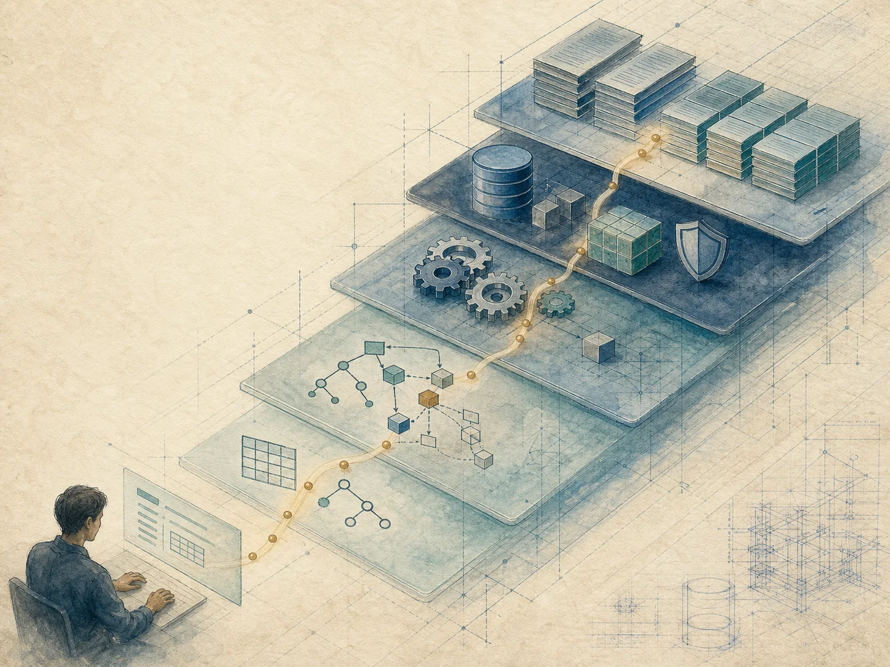
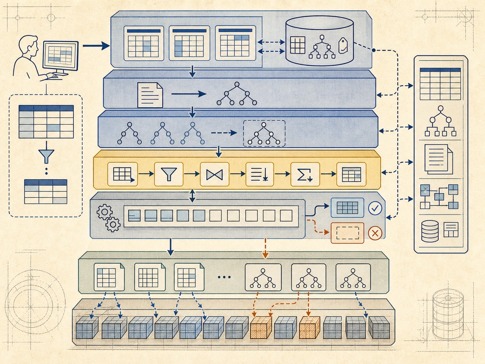
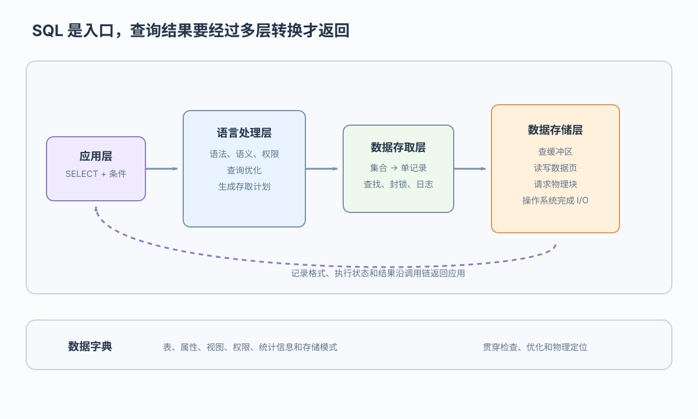

定义
建表、定约束、登记目录

从一条 SELECT 看见 DBMS 各层如何协作
 VER. 2608
Built with impress.js
VER. 2608
Built with impress.js
从应用 SELECT 一路指出谁查表名权限、谁选索引、谁查缓冲区、谁读物理块
SELECT 映射到对应层次及接口还要建表、选文件索引、提交事务、备份恢复、改结构，并让程序连接数据库

建表、定约束、登记目录
安排表、索引、文件、页面和缓冲
查询增删改，按扫描或索引找记录
提交、回滚、并发、日志和恢复
装载、改模式、监控和备份
接入应用，处理多种格式和类型
应用层发请求，操作系统供物理 I/O；DBMS 内部三层靠接口协作
| 位置／层次 | 处理对象 | 关键职责 |
|---|---|---|
| 应用层（外部接口） | 请求和事务 | 接收用户及程序调用 |
| DBMS：语言处理层 | SQL、关系和视图 | 解析、检查、优化和生成调用 |
| DBMS：数据存取层 | 单个元组与逻辑存取路径 | 查找、更新、封锁和日志 |
| DBMS：数据存储层 | 数据页和系统缓冲区 | 页面读写、缓冲和外存交换 |
| 操作系统（物理 I/O 基础） | 物理文件块 | 提供文件与设备读写原语 |
应用不必知道页面、文件和设备细节；更换索引或文件布局时，上层 SQL 接口通常可以保持不变
表列存在吗、用户能读吗、条件命中多少行、有哪些索引？答案来自系统目录
对象不存在时语义检查失败；用户没有权限时拒绝执行；统计信息和存取路径帮助优化器选择计划并定位数据
案例：SELECT Sno, Cno, Grade FROM SC WHERE Sno = '20180003'

应用交出 SQL；DBMS 检查、选计划并查缓冲区；只有未命中时操作系统才读块，记录再逐层返回应用
同一请求从应用经 DBMS 到操作系统，再返回结果
SELECTSELECT 先检查语法、语义和权限；写操作还要检查状态变化是否保持完整性
| 检查 | 适用语句 | 依据／问题 | 失败结果 |
|---|---|---|---|
| 语法 | SELECT／DML | 语句结构是否正确 | 解析错误 |
| 语义 | SELECT／DML | 表、属性和类型是否存在 | 名称或类型错误 |
| 权限 | SELECT／DML | 用户能否访问对象 | 拒绝执行 |
| 完整性（写操作） | INSERT／UPDATE／DELETE | 约束、触发器和当前状态是否允许变化 | 拒绝、错误或回滚 |
应用表达需要哪些记录，DBMS 决定从哪里以及按什么路径读取
逻辑存取路径是定位方式，不是独立的物理层次；文件组织或索引改变时，上层 SQL 通常不必改变
从 SQL 开始，依次记录内部计划、元组请求、页面号、物理块和返回记录
记录 SQL、事务边界与预期结果；应用说“要什么”，不指定页面或设备
用数据字典检查对象、权限、约束和统计；失败时不进入物理读盘
把集合计划变成元组动作，再变成缓冲区和页面请求
缓冲未命中才读物理块；结果与状态沿接口返回
追踪尺度：集合 → 元组 → 页面 → 物理块；上层不依赖具体存储布局
SELECT，应用层、语言处理层、数据存取层、数据存储层、操作系统各做什么？SELECT 与 UPDATE 的检查有什么区别？文件组织或索引变化而 SQL 不变体现什么独立性？